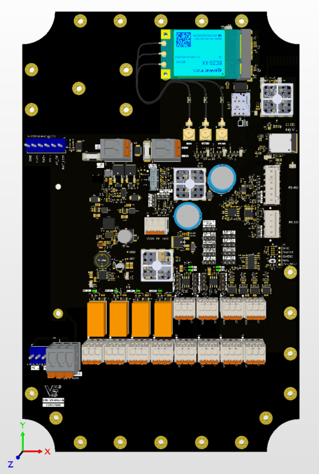

The Viaanix VX-0057 is a universal industrial telemetry and remote-I/O controller. A single board combines multi-network connectivity — LTE Cat-1 cellular with built-in GPS, long-range LoRaWAN, and Bluetooth Low Energy — with a complete set of field interfaces: optically isolated digital inputs, 4–20 mA and 0–10 V analog inputs, dry-contact relay outputs, high-current switched outputs for sirens and warning lights, and RS-232 / RS-485 serial. The same hardware can be deployed as a Tank Monitor, a Callbox, or a full Remote Terminal Unit (RTU), reporting securely to the VX Olympus cloud platform. A wide-range DC input, automatic battery failover, and switchable sensor power make the VX-0057 ready for demanding, always-on field service.
| Processor | Dual-core 32-bit Arm® Cortex®-M33 wireless MCU |
|---|---|
| Cellular | LTE Cat-1, North America bands; integrated GNSS (GPS); micro-SIM socket |
| LoRa | 915 MHz, US ISM band (902–928 MHz) |
| Bluetooth / 802.15.4 | Bluetooth LE 5.3 / IEEE 802.15.4, 2.4 GHz |
| Digital inputs | 4 × optically isolated; common or isolated ground |
| Analog inputs | 4 × 4–20 mA (selectable 12 / 24 V loop power) + 1 × 0–10 V |
| Relay outputs | 4 × SPDT dry contact (COM / NO / NC) |
| Switched outputs | 2 × high-side 12 V switched outputs for siren / warning light |
| Serial ports | 1 × RS-232; 1 × RS-485 (half- or full-duplex) |
| Sensor port power | Switchable 5 / 12 / 24 V |
| Local storage | 16 MB onboard flash for data logging |
| Input voltage | 5–32 V DC (nominal 12.0–13.8 V) |
| Backup power | 12 V battery input with automatic failover; supports an optional external UPS / charger |
| Antenna connectors | Cellular (with GPS), LoRa, and Bluetooth; connector type varies by unit — see product label |
| Cloud platform | VX Olympus cloud platform |
| Mechanical / environmental | See product label; contact Viaanix for the deployment datasheet |
| Interface | Qty | Notes |
|---|---|---|
| Digital input | 4 | Optically isolated; selectable common or isolated ground |
| 4–20 mA analog input | 4 | Selectable 12 V / 24 V loop power for 2-wire transmitters |
| 0–10 V analog input | 1 | Low standby power |
| Relay output | 4 | SPDT dry contact (COM / NO / NC) |
| Switched output | 2 | 12 V high-side, for siren / warning light |
| RS-485 serial | 1 | Half- or full-duplex |
| RS-232 serial | 1 | Standard serial port |
Note: the VX-0057 ships in Tank Monitor, Callbox, or RTU configurations. The interfaces exercised depend on the configuration ordered. Mechanical and environmental ratings are provided on the product label and in the deployment datasheet available from Viaanix.
Read and understand this entire document before installing, operating, or servicing this product. Failure to follow these instructions could result in serious injury, death, or equipment damage. Keep this document for future reference.
When the optional AC mains / UPS input is used, the AC terminals carry lethal line voltage. Disconnect and lock out ALL power sources before opening the enclosure or servicing. AC connection and servicing must be performed only by a qualified electrician, in accordance with local electrical codes. Do not energize AC mains on a bench or test setup.
Circuits connected to the relay terminals (COM / NO / NC) and to the siren / light outputs may carry hazardous voltage or current. De-energize external circuits before wiring. Do not exceed the contact and output ratings marked on the product or stated in the deployment datasheet.
Use only the specified battery type, voltage, and polarity. Reverse polarity, short circuits, over-charging, or over-current can cause leakage, venting, fire, or explosion. Keep the input fuse in place, observe correct polarity, provide appropriate over-current protection, and follow the battery manufacturer's handling and charging instructions. Do not short-circuit or incinerate batteries.
This product contains radio transmitters (cellular, LoRa, and Bluetooth). To limit RF exposure, connect the antennas and maintain the antenna separation distance specified for your installation, and do not operate with personnel in close proximity to the antennas while transmitting. Follow all applicable RF-exposure requirements for the host installation.
Power-conversion and switched-output components can become hot during normal operation. Allow the board to cool before handling and provide adequate ventilation within the enclosure. In normal use these components are inside the host enclosure and are not user-accessible.
Applying reverse polarity or a voltage outside the 5–32 V DC input range can damage the unit. Confirm the supply voltage and polarity, and ensure the source provides adequate current, before applying power.
This product contains static-sensitive electronic components. Handle the board only by its edges in an ESD-safe environment, using a grounded wrist strap and mat. Electrostatic discharge can cause latent damage that is not visible at installation.
Do not operate the cellular, LoRa, or Bluetooth transmitters without the correct antenna connected — running a transmitter without a proper antenna load can damage the radio. Connect the antenna supplied or specified for your unit to each radio before enabling it.
Install the board in an enclosure appropriate to the environment. Protect it from water ingress, condensation, conductive dust, vibration, and direct sunlight unless the deployment is specifically rated for those conditions.
Read and understand this entire guide before installing, operating, or servicing the VX-0057. Installation and service should be carried out by qualified personnel familiar with electronic equipment and local codes. Keep this guide with the equipment for future reference.
The VX-0057 is an electrostatic-sensitive assembly. Before handling, discharge static by using a grounded wrist strap and an anti-static mat. Handle the board by its edges, avoid touching connector pins and components, and store or transport the board in anti-static packaging.
Mount the board securely inside a suitable enclosure, leaving clearance for wiring, antennas, and ventilation. Avoid mounting over heat sources or where water, condensation, or conductive dust can reach the electronics. Route field wiring and antenna cables so they are strain-relieved and cannot chafe.
Supply the board from a clean 5–32 V DC source (nominally 12.0–13.8 V) with correct polarity. Keep the input fuse in place and provide branch-circuit / over-current protection suited to the installation. Connect protective earth / ground where indicated. Do not apply AC mains directly to the DC input.
Connect the antenna supplied or specified for your unit to each radio before enabling its transmitter (cellular, GPS, LoRa, and Bluetooth). Insert an activated SIM for cellular service. Maintain a safe separation distance from the antennas while the device is transmitting (see RF Exposure).
Observe the marked ratings for relay contacts, switched outputs, and analog loop power. De-energize external circuits before connecting them. The digital inputs can be wired for common or isolated ground; the 4–20 mA channels can supply 12 V or 24 V loop power to 2-wire transmitters as configured.
This product contains radio transmitters. During normal operation, maintain the antenna separation distance specified for the installation and do not operate with personnel in close proximity to the antennas. Follow all applicable RF-exposure guidance for the host installation.
There are no user-serviceable internal components. Before servicing, disconnect and lock out all power sources (DC, battery, and AC mains where fitted) and allow the board to cool. Refer all repair to qualified personnel or to Viaanix.
Store and transport the board in anti-static packaging within the rated environment. At end of life, do not discard the product with general or household waste — recycle it in accordance with the electronics-recycling regulations applicable in your region (for example, WEEE in the EU), and dispose of any batteries separately and appropriately.
The VX-0057 integrates radio modules that are intended to be operated under their respective regulatory approvals. Where such approvals apply, the corresponding regulatory markings and identifiers (for example, FCC ID / IC numbers, and any safety or regional conformity marking) are shown on the product label of each unit. Confirm the markings on your specific unit and refer to the product label and accompanying Viaanix documentation for the conditions of authorized operation. This document is product information for reference only and does not by itself constitute a certification, listing, or declaration of conformity.